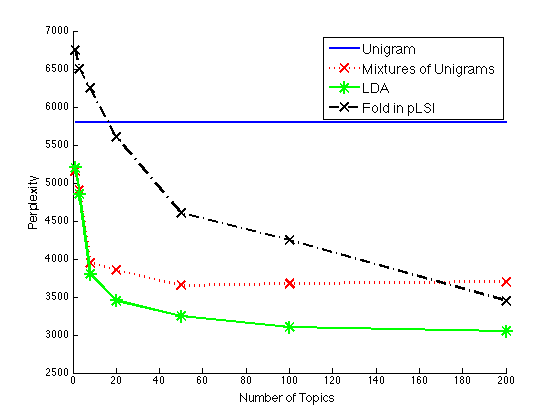

x = [1,3,8,20,50,100,200];
unigram = [5800, 5800, 5800, 5800, 5800, 5800, 5800];
mix_unigram = [5150, 4900, 3950, 3850, 3650, 3675, 3700];
LDA = [5200, 4850, 3800, 3450, 3250, 3100, 3050];
pLSI = [6750, 6500, 6250, 5600, 4600, 4250, 3450];
figure; hold on;
ms = 12;
plot(x, unigram, '-b', 'LineWidth', 2, 'MarkerSize', ms);
plot(x, mix_unigram, ':rx', 'LineWidth', 2, 'MarkerSize', ms);
plot(x, LDA, '-g*', 'LineWidth', 2, 'MarkerSize', ms);
plot(x, pLSI, '-.kx', 'LineWidth', 2, 'MarkerSize', ms);
xlim([0,200]);
ylim([2500,7000]);
xlabel('Number of Topics', 'FontSize', 12);
ylabel('Perplexity', 'FontSize', 12);
h = legend('Unigram', 'Mixtures of Unigrams','LDA', 'Fold in pLSI',...
'Location', 'NorthEast');
set(h, 'FontSize', 14);
hold off;
printPmtkFigure('bleiLDAperplexityPlot')
